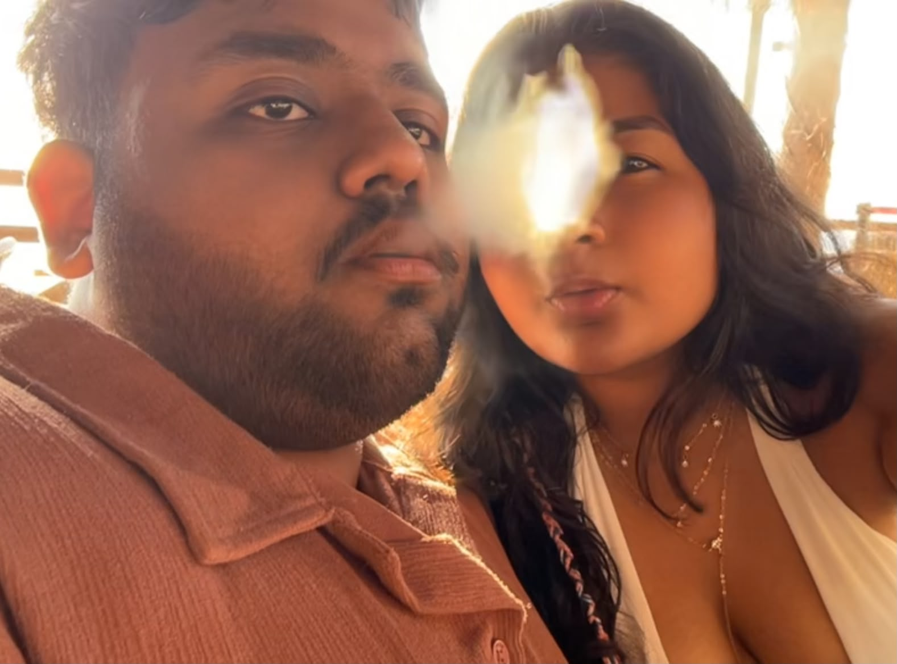

I love how we can turn ordinary days into memories.
for the person who makes ordinary days lovely
Happy Boyfriend's
Day 💜
I made you a tiny little something...
because you deserve your own little corner of the internet. 💜
made with love, DADDU
a tiny handmade collection, just for you
I have 4 little gifts for you...
Open any little gift — they all lead back to us.
gift 01 · the beginning
Once Upon a Us...
And somehow, this became my favorite story.
♡your photo goes here

✧your photo goes here
♡your photo goes here
And somehow, this became my favorite story. ♡
gift 02 · little snapshots
Our Little Moments
The ordinary days with you are my favorite ones.
✦your photo goes here
♡your photo goes here
✧your photo goes here
gift 03 · a few things from my heart
Reasons & Memories
No big speeches. Just a few little truths.
I love the little moments.
I love how ordinary days somehow become memories.
I love having you as my person.
♡your photo goes here
✦your photo goes here
♡your photo goes here
gift 04 · the last little surprise
One Last Thing...
Okay... one last thing.
✧your photo goes here
♡your photo goes here